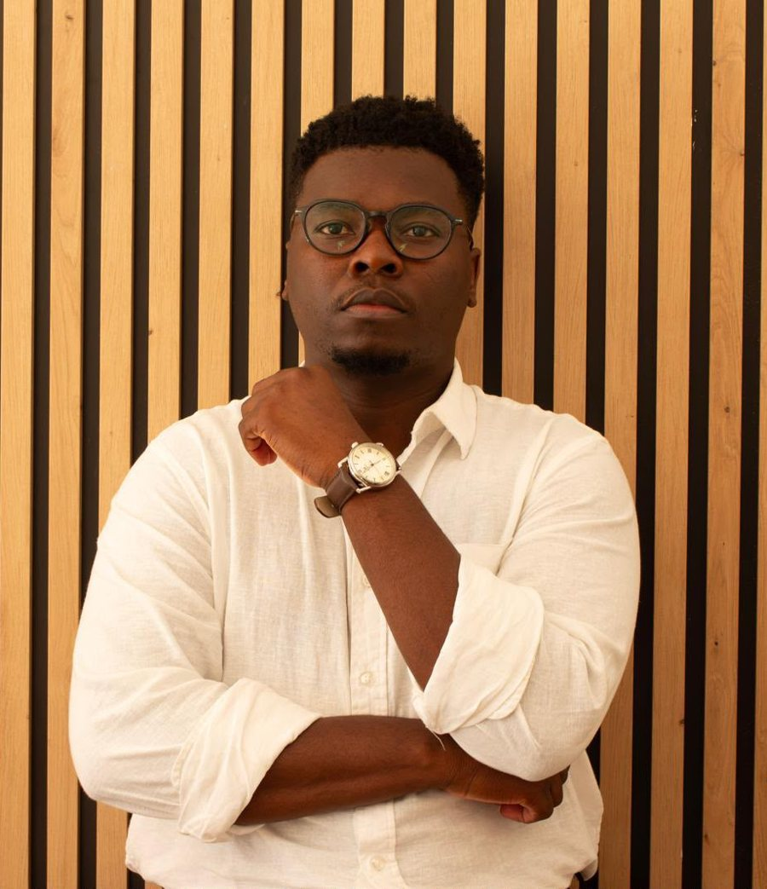

ParcoursBackground
Un parcours entre le Bénin et la France, nourri par la recherche, l'enseignement, le conseil et l'engagement associatif.A path between Benin and France, shaped by research, teaching, legal advice and community work.
Les étapesMilestones
- 2026Doctorat en droit privé et chargé de travaux dirigésPhD in private law and teaching assistantUniversité Grenoble Alpes, CRJ ; Sciences Po Grenoble (programme STEEN)Université Grenoble Alpes, CRJ; Sciences Po Grenoble (STEEN programme)
- 2025Master Droit des Libertés et Graduate School STEENMaster's in Civil Liberties Law and STEEN Graduate SchoolUniversité Grenoble Alpes ; assistant de recherche au CRJUniversité Grenoble Alpes; research assistant at the CRJ
- 2024Demi-finale du Concours René CassinRené Cassin Moot Court semi-finalConcours européen des droits de l'homme, 40e édition ; certification Equality and Diversity (The Football Association)European Human Rights Moot Court, 40th edition; Equality and Diversity certificate (The Football Association)
- 2022Master Droits de la Personne Humaine et DémocratieMaster's in Human Rights and DemocracyChaire UNESCO, Université d'Abomey-Calavi ; début de la pratique au cabinet Études VihodéUNESCO Chair, University of Abomey-Calavi; starts practice at Études Vihodé
- 2020Assistant de rechercheResearch assistantCivic Academy for Africa's FutureCivic Academy for Africa's Future
- 2017Licence ès sciences juridiquesBachelor of LawsUniversité de Parakou, BéninUniversity of Parakou, Benin

Sur le terrainOn the pitch
Le sport n'est pas seulement un objet d'étude : il se pratique aussi.Sport is not only something to study: it is also something to play.
Football
Pratique régulière.Plays regularly.
Tennis
En cours d'initiation.Currently learning.
Golf
En cours d'initiation.Currently learning.
CompétencesSkills
JuridiquesLegal
Droit du sport et gouvernance sportiveSports law and governanceDroit de l'environnementEnvironmental lawDroit des biens et des communsProperty law and the commonsDroits humains et droit internationalHuman rights and international lawStratégie contentieuseLitigation strategy
RechercheResearch
Approche socio-juridiqueSocio-legal methodsEntretiens semi-directifsSemi-structured interviewsAnalyse thématiqueThematic analysisBibliométrieBibliometricsVeille réglementaireRegulatory monitoring
LanguesLanguages
Français, langue maternelleFrench, nativeFon, langue maternelleFon, nativeAnglais, B2English, B2Kiswahili, A2Kiswahili, A2
Certifications
- Equality and Diversity, The Football Association, England Football Learning (2024)
- Droit international des réfugiés, Institut international de droit humanitaire (2022)International Refugee Law, International Institute of Humanitarian Law (2022)